El Gran Mosaico Africano
TANZANIA · ZANZÍBAR · ÁFRICA · FAUNA SALVAJE
África suele entrar en nuestra imaginación a través de animales concretos.
Un león bajo una acacia. Un elefante cruzando la hierba. Una jirafa elevándose sobre los árboles. Cebras desapareciendo hacia un horizonte lejano.
Pero cuanto más tiempo pasas en los paisajes salvajes de Tanzania, más difícil resulta contemplar a cualquiera de ellos de forma aislada.
La hierba bajo las patas de una cebra, el árbol del que se alimenta una jirafa, el agua ocupada por los hipopótamos y los caminos abiertos por los elefantes forman parte de un mismo sistema inmenso.
Cada animal modifica algo.
Cada animal depende de algo más.
Y más allá de la sabana, al otro lado del agua, Zanzíbar transforma nuevamente el paisaje. La hierba seca deja paso al bosque húmedo. El horizonte se convierte en océano. Los grandes mamíferos dan paso a monos, anfibios y a un ritmo de vida completamente distinto.
Este viaje no fue simplemente una sucesión de encuentros con animales.
Fue una pequeña ventana hacia un mosaico inmenso.

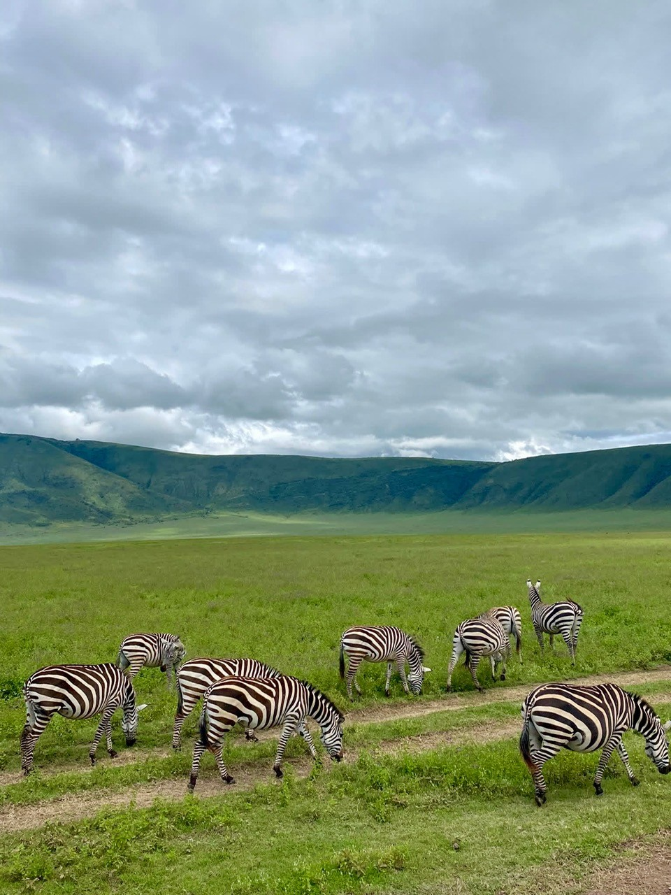
Un Mundo Dentro de un Volcán
Pocos lugares muestran la escala de Tanzania como Ngorongoro.
Desde el interior de la caldera, las paredes lejanas parecen montañas rodeando una enorme llanura verde. Sin embargo, esas paredes son los restos de algo mucho más antiguo.
Ngorongoro es una caldera volcánica, formada cuando un enorme volcán colapsó hace millones de años. Hoy la depresión se extiende aproximadamente veinte kilómetros de lado a lado y alcanza unos seiscientos metros desde el borde hasta el fondo.
En su interior conviven hábitats sorprendentemente distintos: praderas, bosques, pantanos, cursos de agua y lagos.
Y con ellos llega una extraordinaria concentración de fauna.
Desde nuestra perspectiva, las cebras que teníamos delante parecían desplazarse libremente por un campo interminable. Sin embargo, sus movimientos estaban condicionados por algo invisible en la fotografía: el alimento.
La lluvia determina la hierba.
La hierba influye en los herbívoros.
Los herbívoros influyen en los depredadores.
Todo el paisaje se mueve siguiendo conexiones como estas.
¿Por Qué Tiene Rayas una Cebra?
La pregunta parece casi infantil.
La respuesta es sorprendentemente complicada.
A lo largo de los años, los científicos han propuesto numerosas explicaciones para las rayas de las cebras: camuflaje, reconocimiento entre individuos, regulación de la temperatura o confusión de los depredadores, entre otras.
Sin embargo, una de las líneas de evidencia experimental más sólidas tiene que ver con algo muchísimo más pequeño que un león.
Las moscas que se alimentan de sangre.
Distintos estudios han demostrado que el patrón de rayas puede dificultar que determinadas moscas hematófagas aterricen correctamente sobre el animal.
Y eso importa porque estos insectos no son únicamente una molestia. También pueden provocar pérdida de sangre y transmitir enfermedades.
El espectacular patrón blanco y negro podría ser, por tanto, en parte una defensa contra un enemigo que cabe sobre la punta de un dedo.
Además, dentro de cada manada se esconde otro detalle.
No existen dos cebras con exactamente el mismo patrón de rayas.
A nuestros ojos, un grupo puede parecer casi uniforme. De cerca, cada individuo lleva su propia combinación de líneas.
“Las presiones más pequeñas pueden dar forma a los diseños más espectaculares.”

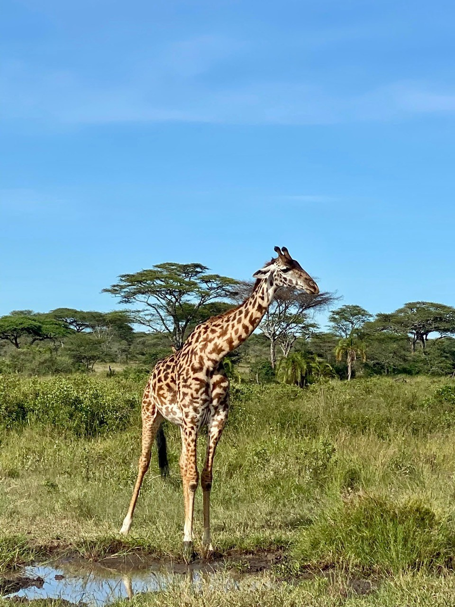
La Ingeniería de un Gigante
Una jirafa parece casi imposible.
Sus proporciones parecen exageradas: patas extraordinariamente largas, un cuello que se eleva metros sobre el suelo y una cabeza capaz de alcanzar vegetación inaccesible para la mayoría de mamíferos.
Pero convertirse en el animal terrestre más alto del planeta creó un extraordinario problema de ingeniería biológica.
La sangre tiene que seguir llegando al cerebro.
El corazón de una jirafa puede pesar alrededor de once kilogramos y debe generar una presión sanguínea excepcionalmente elevada para impulsar la sangre hacia arriba a través de ese extraordinario cuello.
Sin embargo, cuando el animal baja la cabeza para beber, esa misma presión podría convertirse en un problema.
Su sistema circulatorio posee adaptaciones que ayudan a controlar estos cambios bruscos de presión.
Pero quizá el detalle más sorprendente se encuentre dentro del propio cuello.
Una jirafa tiene siete vértebras cervicales.
Nosotros también.
La evolución no añadió decenas de huesos adicionales al cuello. Alargó de manera extraordinaria la misma estructura básica que encontramos en la mayoría de mamíferos.
Incluso la lengua participa en esta vida vertical. Puede alcanzar alrededor de cuarenta y cinco centímetros de longitud, permitiendo manipular hojas entre ramas y espinas.
Y esas pequeñas estructuras sobre la cabeza que parecen cuernos tampoco son exactamente cuernos.
Se llaman osiconos.
Comienzan siendo cartilaginosos y posteriormente se osifican, fusionándose con el cráneo a medida que la jirafa madura.
Ver Antes que los Demás
La altura proporciona otra ventaja.
Una jirafa puede observar el paisaje desde una posición extraordinaria.
Eso significa que otros animales pueden obtener información simplemente prestando atención a lo que hace una jirafa.
Un cambio repentino en la postura o en la atención de un animal cuyos ojos se encuentran varios metros por encima del suelo puede indicar que algo ha cambiado en el paisaje.
La sabana está llena de este tipo de información indirecta.
Una especie no necesita comprender a otra del mismo modo que nosotros comprendemos un idioma.
A veces basta con darse cuenta de que todos están mirando repentinamente hacia el mismo lugar.

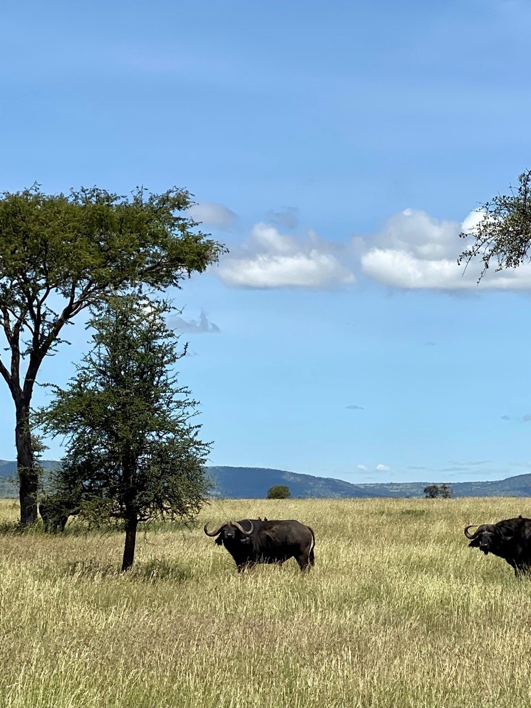
La Fuerza del Grupo
Los búfalos africanos pueden parecer engañosamente tranquilos.
Un enorme cuerpo oscuro permaneciendo inmóvil entre la hierba no revela inmediatamente el complejo mundo social que existe a su alrededor.
Pero los búfalos viven en manadas, y el grupo constituye una de sus mayores defensas.
Las crías y los individuos más vulnerables pueden permanecer bajo la protección de otros animales. Cuando aparece una amenaza, los adultos no siempre optan simplemente por huir.
Pueden plantar cara.
Eso convierte al búfalo en una presa muy diferente de un animal solitario.
Para un león, atacarlo puede ser extremadamente peligroso.
Los cuernos, el peso corporal y la defensa colectiva pueden convertir al depredador en víctima con sorprendente rapidez.
La manada, por tanto, es mucho más que una concentración de animales.
Es un sistema defensivo.
La sociedad de los búfalos también nos recuerda que el movimiento de un grupo no siempre necesita un único líder permanente. Muchos ungulados sociales pueden coordinar su dirección mediante el comportamiento de diferentes individuos y responder colectivamente a información sobre pastos, agua o peligro.
Lo que desde lejos parece una masa de animales moviéndose como uno solo puede ser el resultado de muchas pequeñas decisiones propagándose por el grupo.

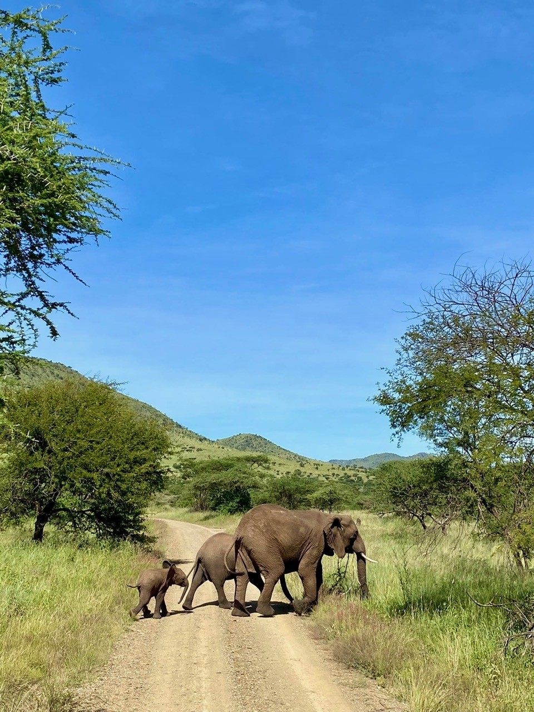
Una Familia Cruzando el Camino
Entonces el camino dejó de pertenecernos.
Un elefante comenzó a cruzarlo.
Detrás aparecieron animales más jóvenes, incluida una pequeña cría cuyas proporciones parecían imposibles junto al enorme cuerpo del adulto.
Durante unos instantes, la pista de safari se convirtió simplemente en otra línea atravesando el territorio de los elefantes.
La escena duró segundos.
El conocimiento necesario para hacerla posible necesita décadas.
La Memoria de la Matriarca
La sociedad de los elefantes africanos se construye alrededor de relaciones duraderas entre hembras.
Una familia suele estar formada por hembras emparentadas y sus descendientes, y las hembras de mayor edad y experiencia pueden desempeñar un papel especialmente importante en el liderazgo.
La edad puede significar conocimiento.
¿Dónde encontrar agua cuando el paisaje se seca?
¿Qué rutas son seguras?
¿Cómo debe reaccionar la familia ante otro grupo?
¿Qué significa una llamada distante?
Un elefante que nace dentro de una de estas familias no hereda únicamente genes.
Crece dentro de un archivo social.
Los jóvenes pasan años aprendiendo de los animales que los rodean.
Otras hembras pueden ayudar a las madres e interactuar con las crías, un comportamiento conocido como cuidado alomaternal.
Para un pequeño elefante, la infancia está rodeada de maestras.
Por eso, la muerte de un individuo experimentado puede significar mucho más que la desaparición de un solo animal.
También puede representar la pérdida de conocimientos acumulados durante décadas.
Un Lenguaje por Debajo de Nuestro Oído
Los elefantes no necesitan estar uno junto al otro para comunicarse.
Su repertorio vocal incluye profundos retumbos de baja frecuencia, algunos con componentes situados por debajo del rango normal de audición humana.
Los sonidos de baja frecuencia pueden propagarse eficazmente a grandes distancias.
Los elefantes utilizan información vocal para mantener relaciones sociales y coordinarse con individuos que pueden encontrarse mucho más allá de nuestro campo de visión.
También se comunican mediante el tacto, el olor, la postura y el movimiento.
Para nosotros, una familia cruzando una pista puede parecer silenciosa.
Para ellos, puede estar sucediendo todo lo contrario.
“Una familia de elefantes transporta mucho más que a sus crías. Transporta memoria.”

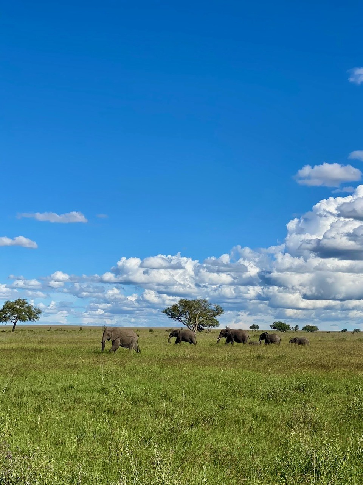
Los Arquitectos de la Sabana
Los elefantes no se limitan a vivir dentro de un paisaje.
Lo transforman físicamente.
Rompen ramas, arrancan corteza, derriban vegetación, abren caminos y transportan semillas a grandes distancias.
Su alimentación puede modificar el equilibrio entre zonas boscosas y hábitats más abiertos.
El uso repetido de puntos de agua puede transformar sus orillas.
Los senderos utilizados generación tras generación terminan convirtiéndose en rutas a través de la vegetación.
En ecología, los animales capaces de modificar un hábitat de manera que afecte a muchos otros organismos pueden ser considerados ingenieros del ecosistema.
Pocos animales hacen esa idea tan visible como un elefante.
Una rama rota puede convertirse en alimento para otro herbívoro.
Una zona recién abierta puede permitir crecer a plantas diferentes.
Los excrementos transportan nutrientes y semillas.
Un camino abierto entre vegetación densa puede ser utilizado después por animales muchísimo más pequeños que aquel que lo creó.
La huella ecológica de un elefante llega mucho más lejos que la marca que deja su pata.

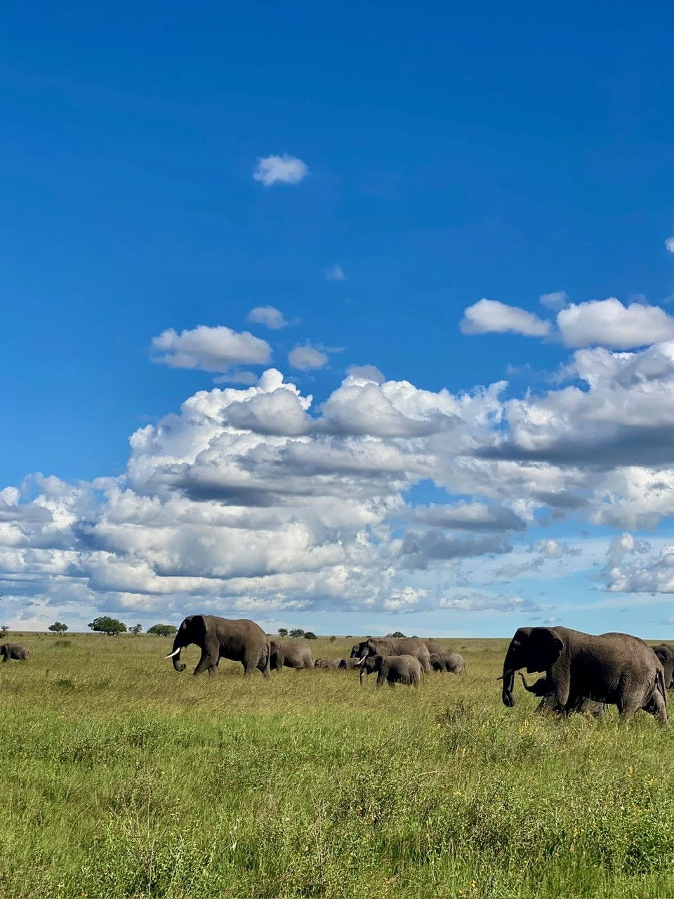
Por Qué los Gigantes Necesitan Espacio
El enorme cielo sobre la manada cuenta otra parte de la historia.
Los animales grandes necesitan paisajes grandes.
Los elefantes pueden recorrer distancias considerables respondiendo a la disponibilidad de alimento y agua, las estaciones y sus necesidades sociales.
Por eso, el hábitat importante no es únicamente el lugar donde un elefante se encuentra en un momento determinado.
También incluye los caminos que conectan unos lugares con otros.
Ahí reside la importancia de los corredores de fauna.
Las áreas protegidas pueden conservar hábitats extraordinarios, pero los animales no entienden las fronteras dibujadas en nuestros mapas.
Su mundo está definido por la lluvia, la vegetación, la memoria, el agua y el movimiento.
Una manada observada en una llanura abierta puede representar únicamente un instante dentro de un viaje mucho mayor de lo que la fotografía puede mostrar.

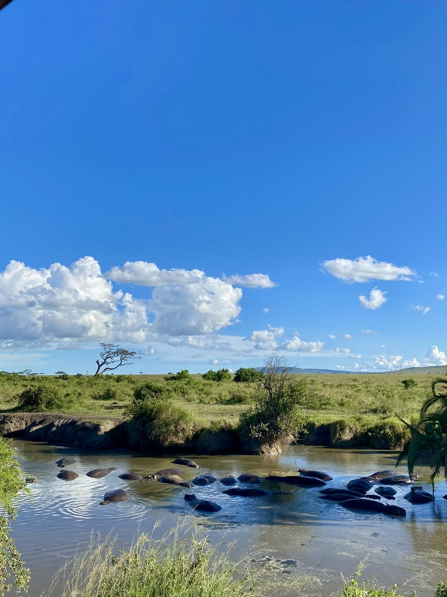
Entre Dos Mundos
Los hipopótamos parecen pertenecer al agua.
Los ojos, las orejas y las fosas nasales están situados en la parte superior de la cabeza, permitiendo que gran parte del cuerpo permanezca sumergido mientras el animal controla lo que sucede sobre la superficie.
Pero su vida está dividida entre el agua y la tierra.
Pasan gran parte del día en ríos, lagos y charcas, donde el agua les ayuda a evitar el sobrecalentamiento y protege su piel de la deshidratación.
Cuando cae la noche pueden abandonar el agua para alimentarse de hierba.
Ese movimiento diario conecta dos ecosistemas.
Los nutrientes consumidos en tierra pueden terminar entrando en los sistemas acuáticos cuando los hipopótamos regresan al agua.
Los animales descansando en una charca no están, por tanto, separados de la pradera que los rodea.
Están transportando materia entre ambas.
El Animal que Fabrica su Propio Protector Solar
En la piel del hipopótamo se esconde una adaptación todavía más extraña.
Los hipopótamos no sudan como lo hacemos los humanos.
Su piel produce una secreción que inicialmente parece incolora y posteriormente adquiere tonos rojizos o anaranjados a medida que aparecen determinados pigmentos.
De ahí nació la popular expresión de que los hipopótamos “sudan sangre”.
No es sangre.
El color procede de pigmentos entre los que se encuentran los ácidos hiposudórico y norhiposudórico.
Las investigaciones han demostrado que estos compuestos proporcionan protección frente a la radiación ultravioleta y poseen propiedades antimicrobianas.
Un hipopótamo lleva, por tanto, parte de la protección de su piel incorporada en su propia química.
Es una de esas adaptaciones que parecen inventadas hasta que la biología vuelve a recordarnos que la naturaleza puede ser mucho más extraña que la ficción.
Parientes Donde Menos lo Esperaríamos
La apariencia también puede engañarnos cuando intentamos comprender las relaciones evolutivas.
Con sus enormes bocas, cuerpos redondeados y patas cortas, durante mucho tiempo los hipopótamos fueron asociados en el imaginario popular con animales parecidos a los cerdos.
Su historia evolutiva conduce a un lugar mucho más sorprendente.
Los parientes vivos más próximos de los hipopótamos son los cetáceos: el grupo que incluye ballenas y delfines.
Millones de años de evolución han producido animales que hoy presentan formas y modos de vida radicalmente diferentes, pero que todavía conservan las huellas de un ancestro compartido.

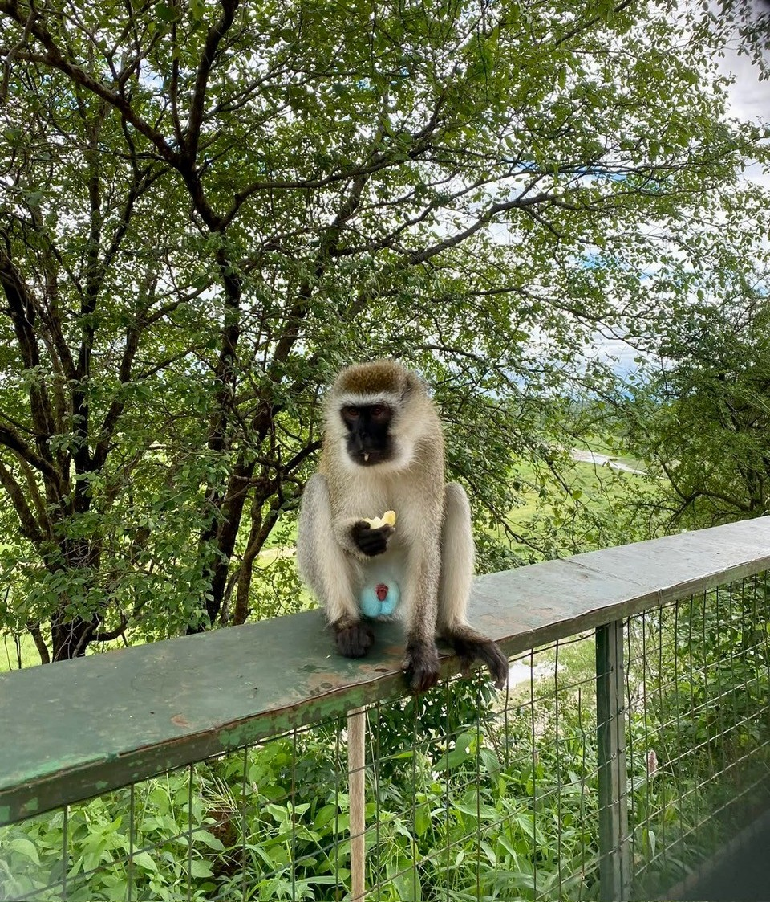
El Mono Azul
No todas las adaptaciones extraordinarias pertenecen a gigantes.
El mono vervet que apareció ante nosotros era diminuto comparado con los elefantes y búfalos que habíamos estado observando.
Pero había un detalle imposible de ignorar.
Los machos adultos de vervet pueden presentar una llamativa coloración azul o azul verdosa en la piel del escroto, creando un contraste espectacular con el pelaje que lo rodea.
Parece casi artificial.
Es completamente natural.
Los vervet viven en grupos sociales y poseen un rico repertorio de llamadas, gestos y relaciones.
También se han hecho famosos en los estudios de comportamiento animal porque sus llamadas de alarma pueden transmitir información asociada a diferentes tipos de peligro.
Una amenaza procedente del cielo no exige la misma respuesta que un depredador aproximándose por tierra.
Para un animal que vive entre los árboles y el suelo abierto, saber no solamente que existe un peligro sino también de dónde puede proceder puede resultar crucial.
La inteligencia en la naturaleza rara vez consiste en resolver problemas abstractos.
Consiste en tomar la decisión adecuada con suficiente rapidez para seguir vivo.
El Paisaje es la Historia
Después de suficientes encuentros, algo cambia en la forma de observar la sabana.
Al principio buscas animales.
Con el tiempo empiezas a buscar relaciones.
La cebra consume hierba.
El elefante transforma la vegetación.
La jirafa se alimenta varios metros por encima de la cebra.
El búfalo encuentra protección en el grupo.
El hipopótamo se mueve entre tierra y agua.
Los depredadores responden a los movimientos de todos ellos.
Los carroñeros responden a los depredadores.
Los insectos reciclan lo que queda.
Las plantas responden al pastoreo, la lluvia, el fuego y las perturbaciones.
Nada existe realmente de forma aislada.

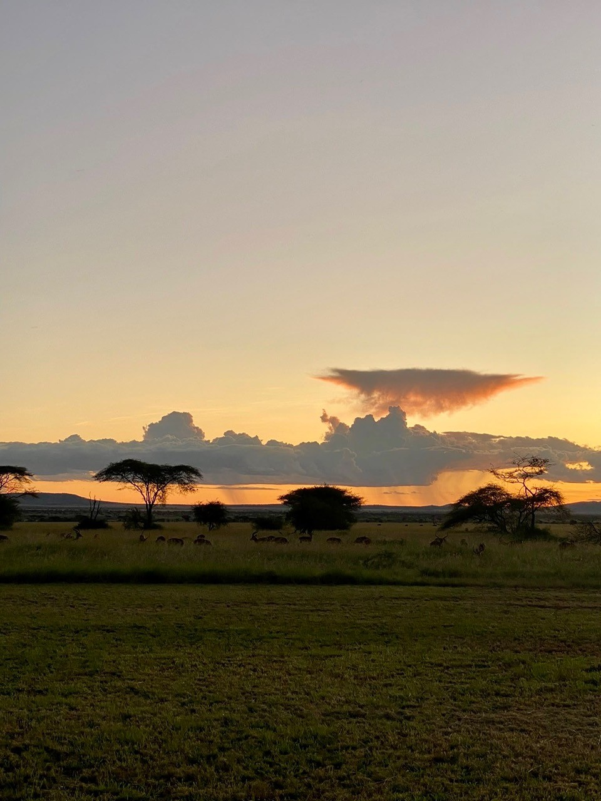
Cuando la Sabana Cambia de Turno
Entonces la luz comienza a desaparecer.
La temperatura desciende.
Las sombras se alargan bajo los árboles.
Para nosotros, el atardecer puede parecer el final del día.
Para la sabana se parece mucho más a un cambio de turno.
Los animales que habían evitado el calor aumentan su actividad. Los cazadores nocturnos comienzan a moverse. Los herbívoros deben equilibrar la necesidad de alimentarse con los nuevos riesgos que trae la oscuridad.
El sonido gana importancia.
La visibilidad disminuye.
El mismo paisaje se convierte en un mundo diferente.
Y en algún lugar más allá de lo que podemos ver, los leones que protagonizaron otra parte de nuestro viaje entran en las horas para las que sus sentidos están especialmente adaptados.
El ecosistema nunca duerme realmente.
Simplemente cambian sus protagonistas.
“El atardecer no pone fin a la sabana. Se la entrega a otro mundo.”
De las Llanuras al Océano Índico
Y entonces llegó Zanzíbar.
El cambio parecía casi imposible.
Los enormes horizontes abiertos de la Tanzania continental dieron paso a vegetación tropical, aire húmedo y al océano Índico.
Cambiaron los colores.
Cambiaron los sonidos.
Incluso cambió la escala de la fauna.
Pero el principio que gobernaba todo aquello seguía siendo exactamente el mismo.
La vida continuaba determinada por el agua, el clima, el alimento y las relaciones entre especies.

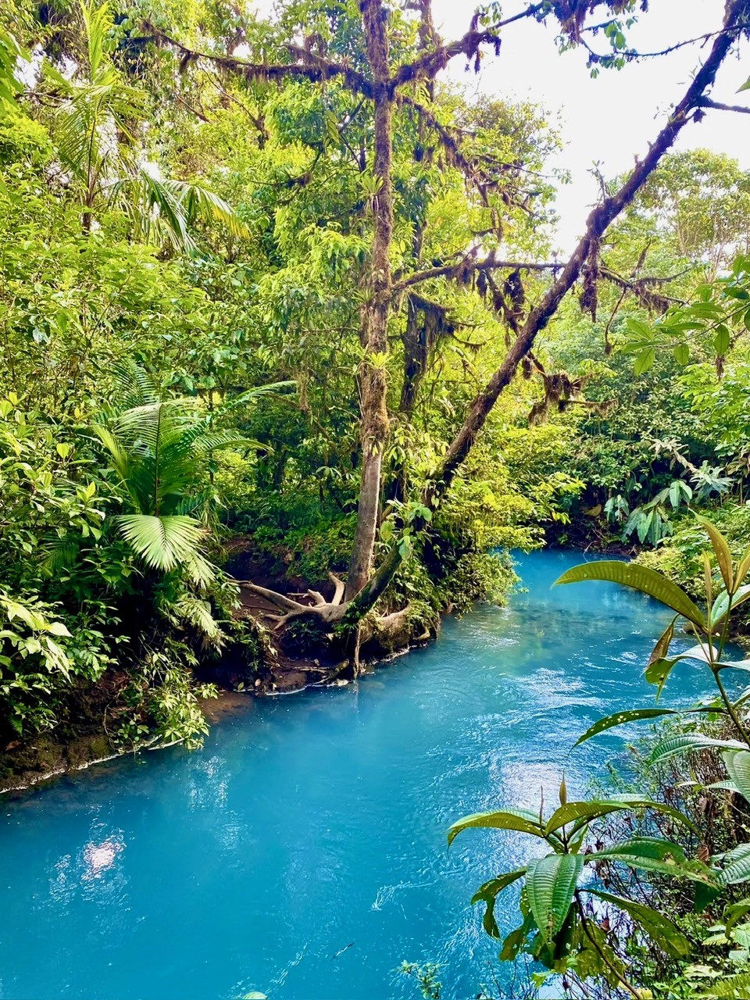
Otra África
La palabra “África” puede crear una imagen sorprendentemente limitada en nuestra imaginación.
Hierba seca.
Acacias.
Grandes mamíferos bajo un cielo inmenso.
Sin embargo, el continente alberga una extraordinaria variedad de ecosistemas, y el entorno tropical de Zanzíbar rompe inmediatamente con ese estereotipo.
La vegetación densa crea una arquitectura completamente diferente.
En las llanuras, la vista puede alcanzar kilómetros.
Dentro de un bosque tropical, la vida puede desaparecer detrás de una sola hoja.
La humedad favorece la presencia de insectos, anfibios y muchos otros pequeños organismos cuyas vidas dependen de microhábitats que pueden medirse en centímetros en lugar de kilómetros.
La escala ha cambiado.
La complejidad ecológica no.

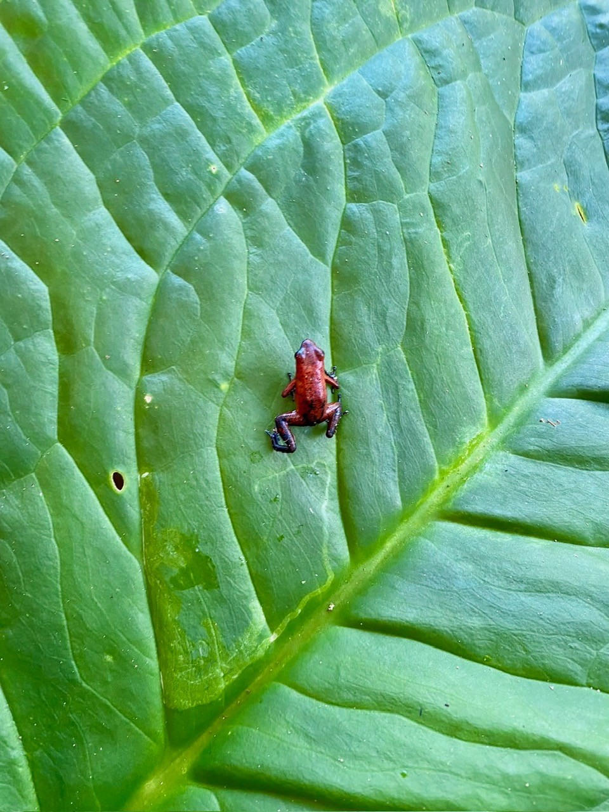
Un Mundo Sobre una Hoja
Después de elefantes, jirafas, búfalos e hipopótamos, sería fácil pasar por alto un animal suficientemente pequeño como para descansar cómodamente sobre una hoja.
Sería un error.
Los anfibios son extraordinariamente sensibles a las condiciones que los rodean.
Su piel desempeña un papel importante en el intercambio con el entorno, haciendo que la humedad y las condiciones del hábitat sean especialmente importantes para su supervivencia.
Muchas especies dependen de combinaciones muy concretas de vegetación, agua y humedad.
Por eso un anfibio diminuto puede contar una historia ecológica mucho mayor.
El elefante transforma paisajes a una escala visible desde lejos.
El anfibio habita un universo medido en gotas, hojas y sombras.
Ambos pertenecen al mismo planeta.
Ambos son el resultado de millones de años de adaptación.
El tamaño es una mala medida de la importancia ecológica.
El Océano al Final del Camino
Finalmente, el paisaje volvió a abrirse.
Pero esta vez no había sabana en el horizonte.
Había mar.

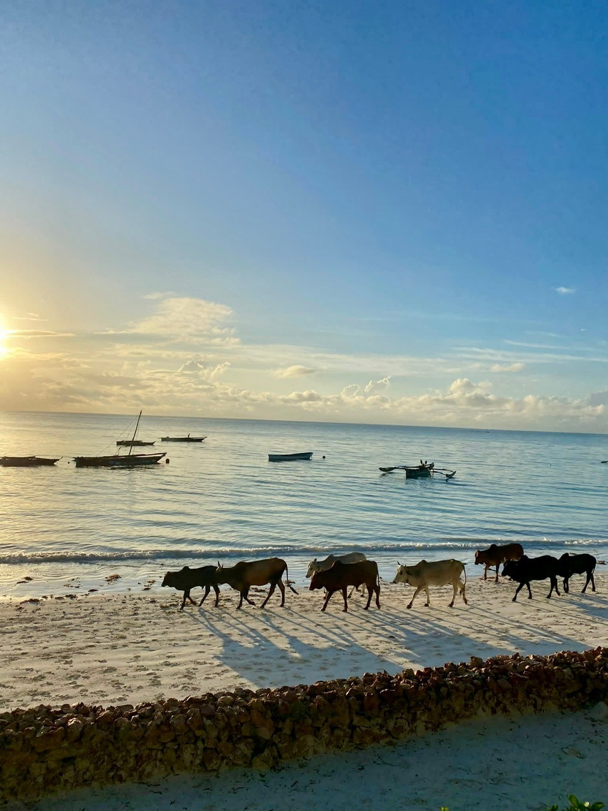
El ganado caminaba por la arena mientras pequeñas embarcaciones flotaban frente a la costa.
Después de días observando animales salvajes desplazándose por enormes espacios naturales, aquella escena parecía inesperadamente cotidiana.
Y quizá precisamente por eso resultaba tan memorable.
África había dejado de ser la imagen distante de un safari.
Aquí convivían animales, personas, barcos, océano y vida cotidiana dentro del mismo encuadre.
El océano Índico ha moldeado Zanzíbar durante siglos, conectando las islas con África Oriental y con mundos marítimos situados mucho más allá.
La marea sigue decidiendo dónde termina el agua y comienza la tierra.
Las embarcaciones se mueven siguiendo el mar.
Las personas y los animales domésticos utilizan la costa junto a los sistemas naturales que los rodean.
Era otro recordatorio de que los paisajes no son fotografías esperando a ser tomadas.
Son lugares donde la vida está sucediendo.
El Gran Mosaico Africano
Al recordar el viaje, resulta tentador reducirlo a una colección de animales extraordinarios.
La jirafa.
Los elefantes.
Las cebras.
El búfalo.
Los hipopótamos.
Los monos.
Pero eso es solamente una parte de lo que había allí.
La verdadera historia existía entre ellos.
Estaba en la hierba transformada por el pastoreo.
En los caminos abiertos por los elefantes.
En el agua que reunía a los animales.
En la lluvia que decidía dónde crecería la vegetación.
En el conocimiento transportado por una vieja matriarca.
En la señal de alarma detectada por otra especie.
En la química que protege la piel de un hipopótamo.
En unas rayas capaces de confundir a una pequeña mosca.
En un anfibio descansando sobre una única hoja húmeda.
Y finalmente en el océano, donde comenzaba otro ecosistema.
La mayor lección del viaje no fue descubrir que África alberga animales extraordinarios.
Eso ya lo sabíamos.
Fue descubrir lo poco que significa cualquiera de esos animales cuando lo separamos del mundo que lo rodea.
La naturaleza salvaje no es una colección de especies.
Es una red de relaciones.
Si retiramos suficientes piezas, el dibujo acaba cambiando.
Si protegemos las conexiones, el mosaico puede seguir moviéndose, adaptándose y reconstruyéndose mucho después de que nosotros nos hayamos marchado.
Llegamos buscando animales salvajes.
Nos marchamos recordando un sistema vivo.
“La maravilla nunca fue un solo animal. Fue todo aquello que hacía posible que estuviera allí.”
Notas Fotográficas
Localizaciones: Tanzania y Zanzíbar
Continente: África
Categoría: Fotografía de Fauna y Viajes
Temas: Fauna Africana, Sabana, Ecosistemas Tropicales
Fotógrafa: Georgina Torres